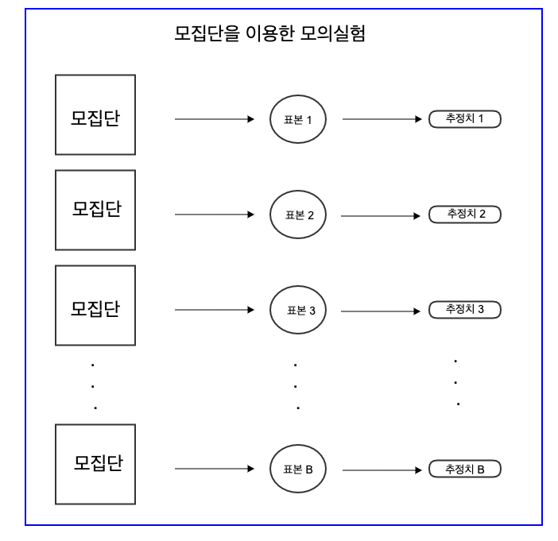
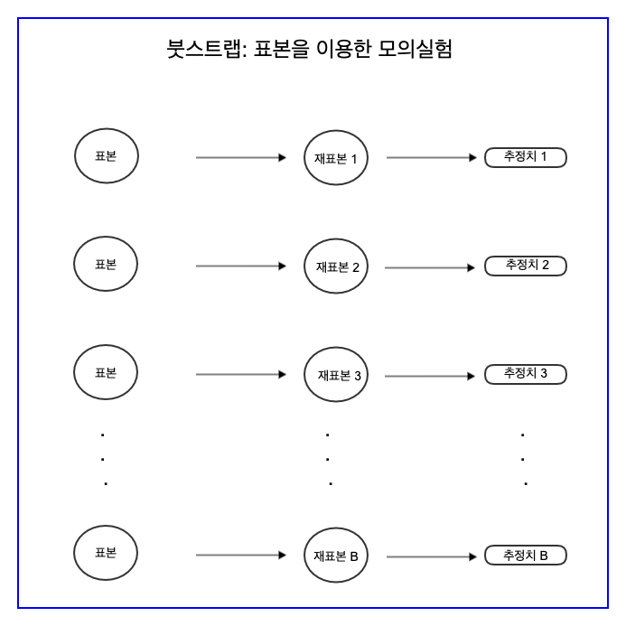

6.4. 붓스트랩#
앞 절에서 우리는 추정량의 정확도를 확률적 언어로 제시하는 방법과 이론적 근거에 대하여 학습하였다.
예를 들어 모집단의 지지율에 대한 여론조사에서 확률표본으로 얻은 표본 지지율, 즉 추정량의 정확성은 다음과 같이 확률적인 언어로 정보의 크기와 그 정확성을 제시하였다.
모집단에 대한 정보 : 1000명의 표본에서 45.5%의 지지율을 보였다.
추정량의 정확성 : 표본 오차는 95% 신뢰수준에 ±3.1%포인트다.
앞 절에서 표본 오차를 설명하기 위하여 가상의 모집단에서 모의실험을 통하여 많은 수의 표본을 추출하고 각 표본에 대한 추정치들을 이용하여 표본 오차를 구한 것에 유의하자. 실제로 표본을 추출하는 경우 모집단은 알 수 없으며 표본은 단 한번만 추출한다. 이러한 경우 모집단에서 모의실험을 통해 표본을 여러 번 추출하는 것은 불가능하다.
이 절에서는 한 개의 표본을 추출하는 경우 표본 오차를 구하는 방법을 설명하고자 한다. 한 개의 표본만 추출해도 표본 오차를 구하는 간단하고 유용한 방법이 있으며 이 방법을 붓스트랩(bootstrap)이라고 한다.
한글 폰트가 깨질 때 사용 - 런타임 메뉴에서 다시 시작 및 모두 실행 선택. (출처: https://teddylee777.github.io/colab/colab-korean)
!sudo apt-get install -y fonts-nanum
!sudo fc-cache -fv
!rm ~/.cache/matplotlib -rf
Reading package lists... Done
Building dependency tree
Reading state information... Done
fonts-nanum is already the newest version (20170925-1).
0 upgraded, 0 newly installed, 0 to remove and 37 not upgraded.
/usr/share/fonts: caching, new cache contents: 0 fonts, 1 dirs
/usr/share/fonts/truetype: caching, new cache contents: 0 fonts, 3 dirs
/usr/share/fonts/truetype/humor-sans: caching, new cache contents: 1 fonts, 0 dirs
/usr/share/fonts/truetype/liberation: caching, new cache contents: 16 fonts, 0 dirs
/usr/share/fonts/truetype/nanum: caching, new cache contents: 10 fonts, 0 dirs
/usr/local/share/fonts: caching, new cache contents: 0 fonts, 0 dirs
/root/.local/share/fonts: skipping, no such directory
/root/.fonts: skipping, no such directory
/var/cache/fontconfig: cleaning cache directory
/root/.cache/fontconfig: not cleaning non-existent cache directory
/root/.fontconfig: not cleaning non-existent cache directory
fc-cache: succeeded
# 그림 그리기를 위한 코드와 한글 실행
import matplotlib.pyplot as plt
from matplotlib import rc
%matplotlib inline
plt.rc('font', family='NanumBarunGothic') # clolab 에서 한글 사용
plt.rcParams['axes.unicode_minus'] = False
plt.rcParams["figure.figsize"] = (8,8) # 그림 크기 조정
import pandas as pd
import numpy as np
6.4.1. 추정량의 표준편차#
모집단의 관심 있는 특성, 즉 모수를 \(\theta\) 라고 하면 추정량은 표본으로 부터 얻은 통계량이다. 확률표본의 임의성(randomness)때문에 추정량은 확률분포를 가진다. 추정량이 확률분포를 가진다는 것은 가능한 값이 여러 개 있다는 것이며 각 값에 대한 확률이 있다는 것이다.
앞 절에서는 모집단을 알고 있는 경우 추정량의 분포를 근사하기 위하여 모집단에서 표본을 반복하여 추출하였다. 더 나아가 각 표본으로 부터 추정량의 값을 구할 수 있다. 만약 모의실험의 횟수가 B 라고 하면 우리는 B개의 추정량들을 구할 수 있다.
위에서 표본의 크기가 커지면 모의실험으로 구한 B개의 추정량들의 분포가 정규분포와 가까워진다. 이 사실은 중심극한 정리에 의한 결과이다. 또한 B개의 추정량들의 평균은 모수와 매우 가깝게 나타난다.
또한 B개의 추정량들의 표준편차를 SD 라고 하면
다음과 같은 확률적 표현이 가능하다.
95%의 확률로 추정량과 모수의 차이는 ± 2SD 이내이다.
즉,
또는 위의 식을 다르게 표현하면 다음과 같다.
그런데 문제는 실제 표본을 추출하는 경우 우리는 한 개의 표본만 추출하며 따라서 우리가 얻을수 있는 추정량의 값은 1개 밖에 없다.
이런 실제 상황에서 추정량의 표준편차 SD를 어떻게 구할까??? 만약 여론조사에서 1000명으로 구성된 하나의 표본을 추출하고 표본 지지율 35%를 얻었다면 SD 를 구할 방법이 없을 것 같다. 왜냐하면 1개의 값으로는 표준편차를 구할 수 없기 때문이다.
6.4.2. 붓스트랩#
붓스트랩(bootstrap) 은 하나의 표본으로 부터 추정량의 경험적 분포를 근사적으로 구할 수 있는 방법이다. 붓스트랩은 통계학에서 발견한 획기적인 방법 중의 하나로서 컴퓨터를 이용한 모의실험(simulation)을 이용한다.
붓스트랩 방법의 아이디어는 다음과 같이 매우 간단하다.
표본을 모집단처럼 이용하자!!
위에서 우리가 모집단을 알고 있을 때 어떻게 추정량의 분포를 모의실험을 통하여 근사적으로 구하는지 다시 생각해 보자. 다음과 그림과 같이 우리는 모집단에서 많은 수의 표본들을 반복적으로 추출하여 여러 개의 추정치를 구하는 모의실험을 수행해 보았다.

이제 한 개의 표본이 있다고 하자. 한 개의 표본을 모집단이라고 생각하고 표본에서 많은 수의 표본들을 다시 재추출(resampling) 하여 여러 개의 추정치를 구하는 방법이 붓스트랩이다.

여기서 유의해야 할 점은 표본에서 표본을 재추출하는 경우 복원추출 을 사용해야 한다는 것이다. 즉, 재추출은 \(n\)개의 표본에서 \(n\)개를 복원추출하는 방법이다.
붓스트랩 방법을 한마다로 요약하면 표본에서 표본을 재추출하는 방법이다.
이제 앞 장에서 고려한 지지율을 추정하는 여론 조사에 대하여 붓스트랩 방법을 이용하여 표본 지지율의 경험적 분포를 근사적으로 구하고 추정량의 표준편차 SD를 구해보자.
먼저 모집단 P 을 만들자.
# 모집단의 수
N = 100000
# 모집단의 지지율
theta = 0.5
# 지지하는 유권자의 수
favor = int(N*theta)
# 반대하는 유권자의 수
opposite = N-favor
# 모집단 (1=지지, 0=반대)
P = np.concatenate((np.ones(favor), np.zeros(opposite)), axis=0)
이제 1000명으로 구성돤 하나의 확률표본을 추출해 보자
# 표본의 수
n = 1000
# 하나의 표본을 추츨
one_sample = np.random.choice(P, n, replace=False)
위에서 추출한 표본으로 부터 얻은 표본 지지율 \(\hat \theta\) 은 다음과 같다.
hat_theta = np.mean(one_sample)
hat_theta
0.499
다음으로 붓스트랩을 이용하여 재표본을 반복적으로 추출하고 지지율를 구해보자. 붓스트램도 모의실험이므로 모의실험의 회수를 크게 해야 한다. 아래 코드에서 붓스트랩의 모의실험 횟수는 1000번이다 (B=1000).
붓스트랩은 모집단에서 표본을 반복적으로 추출하는 것이 아니라 주어진 하나의 표본에서 표본을 반복적으로 재추출(resampling from sample) 한다는 것이다.
# 붓스트랩 모의실험의 횟수
B = 1000
# 붓스트랩 - 표본의 재추출을 B번 반복하여 B개의 지지율(추정량)을 구한다.
## B 개의 추정치를 저장할 데이터프레임
boostrap_estimate = pd.DataFrame({'resample_estimate':np.zeros(B)})
## 붓스트랩을 위한 모의실험 : 복원추출(replace=True)에 유의
for i in np.arange(B):
resample = np.random.choice(one_sample, n, replace=True)
boostrap_estimate.loc[i,'resample_estimate'] = np.mean(resample)
붓스트랩을 이용하여 표본 지지율의 분포, 즉 추정량의 경험적 분포를 히스토그램으로 나타내어 보자.
# 히스토그램
p= boostrap_estimate.plot.hist( density=True)
이제 붓스트랩으로 구한 1000개 지지율의 표준편차 SD를 구해보자.
# 붓스트랩으로 구한 B개의 지지율의 표준편차
SD = float(boostrap_estimate.std())
SD
0.01615287300471055
앞 절에서 우리는 표본의 크기가 \(n=1000\) 일 경우 지지율에 대한 이론적으로 정확한 표본 오차가 \(2SD=0.0316\) 으로 주어지는 것을 배웠다.
위에서 구한 붓스트랩을 이용한 표본 오차 \(2SD\)의 값이 정확한 표본오차와 매우 유사하다는 것을 알 수 있다.
2*SD
0.0323057460094211
6.4.3. 신뢰구간#
6.4.3.1. 추정량의 경험적 분포#
붓스트랩으로 구한 1000개의 추정치, 즉 1000개의 표본 지지율의 분포를 히스토그램으로 그려보자. 아래 주어진 히스토그램은 붓스트랩으로 구한 추정량의 경험적 분포 (empirical distribution of estimator)이다.
# 히스토그램
p= boostrap_estimate.plot.hist( density=True)
6.4.3.2. 백분위수에 의한 신뢰구간#
이제 붓스트랩으로 구한 1000개의 추정치(지지율)들을 순서대로 늘어 놓았을때 2.5%백분위수와 97.5% 백분위수를 구해보자. 우리가 1사분위수(Q1, 25%백분위수) 또는 3사분위수(Q3 75%백분위수)를 구하는 방법과 유사하게 구할 수 있다.
pandas 라이브러리의 percentile 메소드를 사용하면 2.5%와 97.5% 백분위수를 구할 수 있다.
lower_bound = float(boostrap_estimate.quantile(0.025))
upper_bound = float(boostrap_estimate.quantile(0.975))
(lower_bound, upper_bound)
(0.467, 0.5320250000000001)
위와 같이 2.5%백분위수 \(\hat \theta_{(0.025)}\) 와 97.5% 백분위수 \(\hat \theta_{(0.975)}\)로 만든 구간을 모수 \(\theta\) 에 대한 95% 신뢰구간(confidence interval) 이라고 한다. 이때 95%를 신뢰수준(confidence level) 이라고 부른다.
95%의 의미는 붓스트랩을 이용하여 만든 1000개의 추정값들 중 95%, 즉 950개의 추정값이 주어진 구간 안에 있다는 것이다. 붓스트랩을 이용한 추정량의 경험적 분포를 이용하여 만든 구간이다.
# 히스토그램
p= boostrap_estimate.plot.hist( density=True)
# 2.5%백분위수와 97.5% 백분위수 사이 구간은 빨간색으로
for rectangle in p.patches:
if rectangle.get_x() >= lower_bound and rectangle.get_x() <= upper_bound :
rectangle.set_facecolor('red')
6.4.3.3. 표준 편차에 의한 신뢰구간#
우리는 95% 신뢰구간(confidence interval)을 위에서 구한 추정량의 표준 편차 SD를 이용하여 다음과 같이 구할 수 있다.
위의 주어진 구간의 죄우 값을 계산하면 다음과 같다.
lower_bound_2 = hat_theta -2*SD
upper_bound_2 = hat_theta + 2*SD
(lower_bound_2, upper_bound_2)
(0.4666942539905789, 0.531305746009421)
붓스트랩의 백분위수로 구한 신뢰구간 \((\hat \theta_{(0.025)}, \hat \theta_{(0.975)}) \)이 추정량의 표준 편차 SD로 구한 신뢰구간 \((\hat \theta -2SD, \hat \theta+ 2SD\))과 매우 유사함을 알 수 있다.
6.4.3.4. 신뢰구간의 해석#
신뢰구간은 표본으로부터 얻어지는 것이기 때문에 임의성을 가진다. 표본이 임의성을 가지므로 신뢰구간의 하한(lower bound)과 상한(upper bound)도 임의성을 가진다. 실제 상황에서 추정량의 값과 모수의 정확한 차이를 알 수 없듯이 표본으로 구한 특정한 신뢰구간에 대하여 구간 안에 모수가 포함되었는지 정확하게 알 수 없다.
95% 신뢰구간의 의미는 “임의의 구간” \((\hat \theta -2SD, \hat \theta+ 2SD)\) 이 관심있는 모수 \(\theta\)를 포함할 확률이 0.95라는 의미이다. 이는 위에서 배운 중심극한 정리의 결과를 응용한 것이다. 즉
신뢰구간의 신뢰수준(confidence level)이 95% 라는 의미는 여러분이 만약 모집단을 이용한 모의실험으로 100개의 신뢰구간을 구하면 그 중에 약 95개의 구간이 모수를 포함한다는 것으로 해석하면 된다.
참고할 점은 통계학의 한 분야인 베이지안 통계(bayesian statsitics)에서는 모수도 임의성이 있다고 보기 때문에 “여러분이 구한 특정한 신뢰구간” 에 모수가 포함될 확률이 95% 이라고 말할 수 있다.
이러한 신뢰구간에 대한 서로 다른 해석의 차이를 여러분들이 이해하는 것은 어려운 일이다.
결론적으로 여러분이 구한 95% 신뢰구간에 모수가 포함되었을 가능성이 95%라고 생각해도 큰 문제는 없다.
일반적으로 백분위수를 이용한 신뢰구간과 표준편차 SD 를 이용한 신뢰구간은 정확하게 일치하지 않는다. 하지만 표본의 크기가 커지면 중심극한 정리에 의하여 추정량의 분포가 정규분포에 가까워지므로 백분위수를 이용한 신뢰구간과 SD를 이용한 신뢰구간은 점점 일치한다.
6.4.4. 예제: 공공 자전거#
앞 절에서 다룬 공공 자전거 자료에서 이용시간과 이용거리에 대한 중앙값(median)에 대한 신뢰구간을 붓스트랩 방법으로 구하는 법을 살펴보자.
먼저 자료를 데이터프레임 bike 에 저장한다.
url1 = "https://ilovedata.github.io/teaching/bigdata2/data/seoul_bike_201909_3.csv"
bike = pd.read_csv(url1, encoding="CP949")
bike
| 자전거번호 | 대여일시 | 대여 대여소번호 | 대여 대여소명 | 대여거치대 | 반납일시 | 반납대여소번호 | 반납대여소명 | 반납거치대 | 이용시간 | 이용거리 | |
|---|---|---|---|---|---|---|---|---|---|---|---|
| 0 | SPB-17003 | 2019-09-28 16:10:55 | 368 | SK 서린빌딩 앞 | 4 | 2019-09-28 17:03:32 | 2002 | 노들역 1번출구 | 14 | 52 | 8940.0 |
| 1 | SPB-14405 | 2019-09-28 16:48:16 | 2024 | 상도역 1번출구 | 3 | 2019-09-28 17:03:44 | 2002 | 노들역 1번출구 | 18 | 15 | 1910.0 |
| 2 | SPB-18431 | 2019-09-28 16:59:54 | 2002 | 노들역 1번출구 | 10 | 2019-09-28 17:03:57 | 2002 | 노들역 1번출구 | 10 | 2 | 30.0 |
| 3 | SPB-04853 | 2019-09-28 15:31:49 | 207 | 여의나루역 1번출구 앞 | 32 | 2019-09-28 17:10:12 | 2002 | 노들역 1번출구 | 19 | 98 | 9610.0 |
| 4 | SPB-11122 | 2019-09-28 15:35:41 | 207 | 여의나루역 1번출구 앞 | 14 | 2019-09-28 17:10:37 | 2002 | 노들역 1번출구 | 18 | 90 | 9450.0 |
| ... | ... | ... | ... | ... | ... | ... | ... | ... | ... | ... | ... |
| 407584 | SPB-24072 | 2019-09-12 08:56:34 | 240 | 문래역 4번출구 앞 | 9 | 2019-09-12 09:03:37 | 99999 | 영남단말기정비 | 2 | 6 | 720.0 |
| 407585 | SPB-16130 | 2019-09-18 10:13:09 | 99999 | 영남단말기정비 | 1 | 2019-09-18 11:38:30 | 99999 | 영남단말기정비 | 1 | 85 | 40.0 |
| 407586 | SPB-03728 | 2019-09-25 08:00:28 | 2183 | 동방1교 | 7 | 2019-09-25 08:54:02 | 99999 | 영남단말기정비 | 5 | 53 | 12910.0 |
| 407587 | SPB-08928 | 2019-09-30 07:49:27 | 2183 | 동방1교 | 10 | 2019-09-30 09:42:27 | 99999 | 영남단말기정비 | 7 | 2 | 0.0 |
| 407588 | SPB-06988 | 2019-09-30 09:58:43 | 99999 | 영남단말기정비 | 5 | 2019-09-30 13:01:26 | 99999 | 영남단말기정비 | 5 | 182 | 10.0 |
407589 rows × 11 columns
이용시간과 이용거리의 열이름을 각각 time 과 distance 로 바꾸고 두 열만 포함하는 데이터프레임 bike2를 만들자.
bike2 = bike[ ["이용시간","이용거리"] ].rename(columns={"이용시간":"time", "이용거리":"distance"})
bike2
| time | distance | |
|---|---|---|
| 0 | 52 | 8940.0 |
| 1 | 15 | 1910.0 |
| 2 | 2 | 30.0 |
| 3 | 98 | 9610.0 |
| 4 | 90 | 9450.0 |
| ... | ... | ... |
| 407584 | 6 | 720.0 |
| 407585 | 85 | 40.0 |
| 407586 | 53 | 12910.0 |
| 407587 | 2 | 0.0 |
| 407588 | 182 | 10.0 |
407589 rows × 2 columns
bike2.describe()
| time | distance | |
|---|---|---|
| count | 407589.000000 | 407589.000000 |
| mean | 30.156827 | 4253.336228 |
| std | 32.065934 | 5782.673901 |
| min | 1.000000 | 0.000000 |
| 25% | 8.000000 | 1200.000000 |
| 50% | 18.000000 | 2380.000000 |
| 75% | 43.000000 | 5130.000000 |
| max | 2479.000000 | 153490.000000 |
이제 1000개의 표본을 추출해 보자.
# 표본의 수
n = 1000
one_sample = bike2.sample(n=n, replace=False, random_state=13312)
one_sample
| time | distance | |
|---|---|---|
| 50771 | 25 | 1830.0 |
| 179510 | 20 | 3670.0 |
| 167844 | 8 | 1180.0 |
| 244482 | 3 | 210.0 |
| 102805 | 9 | 1330.0 |
| ... | ... | ... |
| 333457 | 10 | 1140.0 |
| 355981 | 25 | 7760.0 |
| 252088 | 50 | 3970.0 |
| 282282 | 12 | 1610.0 |
| 273850 | 8 | 1630.0 |
1000 rows × 2 columns
one_sample.describe()
| time | distance | |
|---|---|---|
| count | 1000.000000 | 1000.000000 |
| mean | 28.150000 | 3923.110000 |
| std | 28.664598 | 4723.684348 |
| min | 1.000000 | 0.000000 |
| 25% | 8.000000 | 1247.500000 |
| 50% | 18.000000 | 2345.000000 |
| 75% | 41.000000 | 5040.000000 |
| max | 321.000000 | 70890.000000 |
이제 추출한 표본에서 100개의 붓스트랩 재표본 1000개를 이용하여 이용시간과 이용거리의 중간값를 만들어 보자. numpy 라이브러리의 median 함수를 사용할 것이다.
# 붓스트랩 모의실험의 횟수
B = 1000
# 붓스트랩 - 표본에서 B번 반복하여 재추출 표본을 만들고 B개의 추정값을 구한다.
bootstrap_estimates = pd.DataFrame({'time_boot':np.zeros(B), 'distance_boot':np.zeros(B)})
for i in np.arange(B):
boot_sample = one_sample.sample(n=n, replace=True, random_state=i)
bootstrap_estimates.loc[i,'time_boot'] = np.median(boot_sample.time)
bootstrap_estimates.loc[i,'distance_boot'] = np.mean(boot_sample.distance)
bootstrap_estimates
| time_boot | distance_boot | |
|---|---|---|
| 0 | 18.0 | 4184.59 |
| 1 | 17.0 | 3849.55 |
| 2 | 18.0 | 4031.78 |
| 3 | 18.0 | 4157.10 |
| 4 | 19.0 | 3966.78 |
| ... | ... | ... |
| 995 | 17.5 | 3884.88 |
| 996 | 19.0 | 3935.96 |
| 997 | 19.0 | 3819.56 |
| 998 | 17.0 | 3639.65 |
| 999 | 19.0 | 3848.63 |
1000 rows × 2 columns
1000개의 붓스트랩 재표본으로 부터 구한 이용시간과 이용거리의 중간값들의 분포를 히스토그램으로 그려보자.
bootstrap_estimates[["time_boot"]].plot.hist( density=True)
<matplotlib.axes._subplots.AxesSubplot at 0x7f42e5cc8c50>
p= bootstrap_estimates[["distance_boot"]].plot.hist( density=True)
p
<matplotlib.axes._subplots.AxesSubplot at 0x7f42d89f1c10>
붓스트랩 재표본의 백분위수를 이용하여 모집단 이용시간 중간값에 대한 95% 신뢰구간을 구하면 다음과 같다.
lower_bound = float(bootstrap_estimates[["time_boot"]].quantile(0.025))
upper_bound = float(bootstrap_estimates[["time_boot"]].quantile(0.975))
(lower_bound, upper_bound)
(16.5, 20.0)
붓스트랩 재표본의 백분위수를 이용하여 모집단 이용거리 중간값에 대한 95% 신뢰구간을 구하면 다음과 같다.
lower_bound = float(bootstrap_estimates[["distance_boot"]].quantile(0.025))
upper_bound = float(bootstrap_estimates[["distance_boot"]].quantile(0.975))
(lower_bound, upper_bound)
(3643.26675, 4227.87525)
6.4.5. 특별한 추정량: 표본 평균#
통계 이론에 의하면 다음과 같이 추정량의 형태가 특별한 경우 추정량의 표준편차 SD 를 붓스트랩 방법을 이용하지 않고 구할 수 있다.
만약 표본 \(S\) 에 포함된 \(n\) 개의 값들을 \(x_1, x_2, \dots, x_n\)이라고 하면 표본 평균(sample mean) 은 다음과 같다.
만약 관심있는 모수 \(\theta\) 가 모집단의 평균이라면 추정량은 표본 평균 \(\hat \theta = \bar x\) 이며 표본 평균의 SD를 다음과 같이 직접 구할 수 있다.
위에서 표본의 표준편차 는 표본에 속한 값들의 표준편차이다.